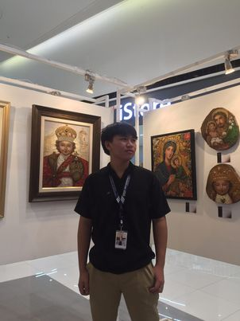

Hello, I'm Vincent
I'm a writer and chess master based in cebu city. With over 0 year of experience in digital world tournament, I've developed a keen eye for storytelling and engaging narratives.
Hello, I'm Joshua
I'm a passionate writer and content creator based in New York. With over 5 years of experience in digital content creation, I've developed a keen eye for storytelling and engaging narratives.
Hello, I'm Louise
I'm a passionate writer and content creator based in New York. With over 5 years of experience in digital content creation, I've developed a keen eye for storytelling and engaging narratives.